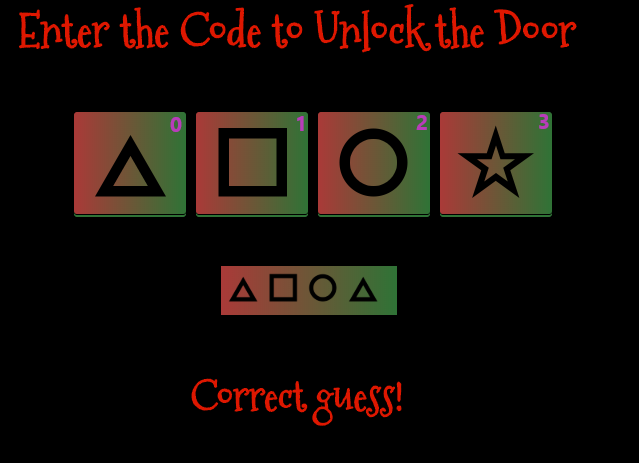

Question 3: de Bruijn Sequences¶
The KringleCon Speaker Unpreparedness room is a place for frantic speakers to furiously complete their presentations. The room is protected by a door passcode. Upon entering the correct passcode, what message is presented to the speaker? For hints on achieving this objective, please visit Tangle Coalbox and help him with the Lethal ForensicELFication Cranberry Pi terminal challenge.
Answer: Welcome unprepared speaker!
Solution¶
The door passcode consists of four characters, where each character was one of four possible shapes. Mathematically this means there are 4 * 4 * 4 * 4 = 256 combinations.
Instead of brute forcing the door, we decided to follow the hint and use the de Bruijn sequence generator to cut down on the number of guesses we needed to make.
The sequence we generated consisted of the following:
0 0 0 0 1 0 0 0 2 0 0 0 3 0 0 1 1 0 0 1 2 0 0 1 3 0 0 2 1 0 0 2 2 0 0 2 3 0 0 3 1 0 0 3 2 0 0 3 3 0 1 0 1 0 2 0 1 0 3 0 1 1 1 0 1 1 2 0 1 1 3 0 1 2 1 0 1 2 2 0 1 2 3 0 1 3 1 0 1 3 2 0 1 3 3 0 2 0 2 0 3 0 2 1 1 0 2 1 2 0 2 1 3 0 2 2 1 0 2 2 2 0 2 2 3 0 2 3 1 0 2 3 2 0 2 3 3 0 3 0 3 1 1 0 3 1 2 0 3 1 3 0 3 2 1 0 3 2 2 0 3 2 3 0 3 3 1 0 3 3 2 0 3 3 3 1 1 1 1 2 1 1 1 3 1 1 2 2 1 1 2 3 1 1 3 2 1 1 3 3 1 2 1 2 1 3 1 2 2 2 1 2 2 3 1 2 3 2 1 2 3 3 1 3 1 3 2 2 1 3 2 3 1 3 3 2 1 3 3 3 2 2 2 2 3 2 2 3 3 2 3 2 3 3 3 3 (0 0 0)
Referring to above diagram, we entered the sequence one character at a time (substituting the shapes for numbers) into the door passcode and soon revealed the correct code.
After entering the room and talking to Morcel Nouget we obtained the Welcome unprepared speaker! phrase which is the answer to the question.